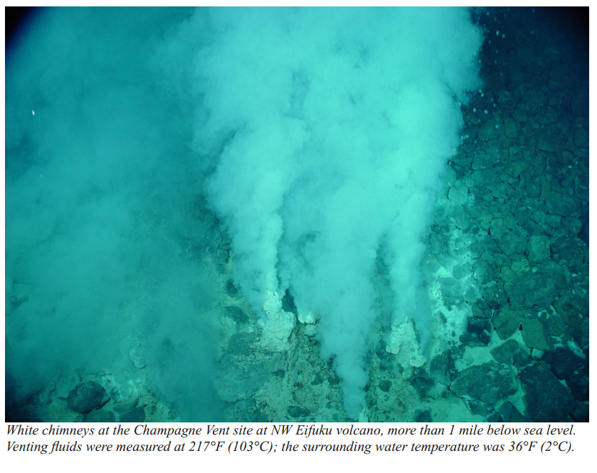
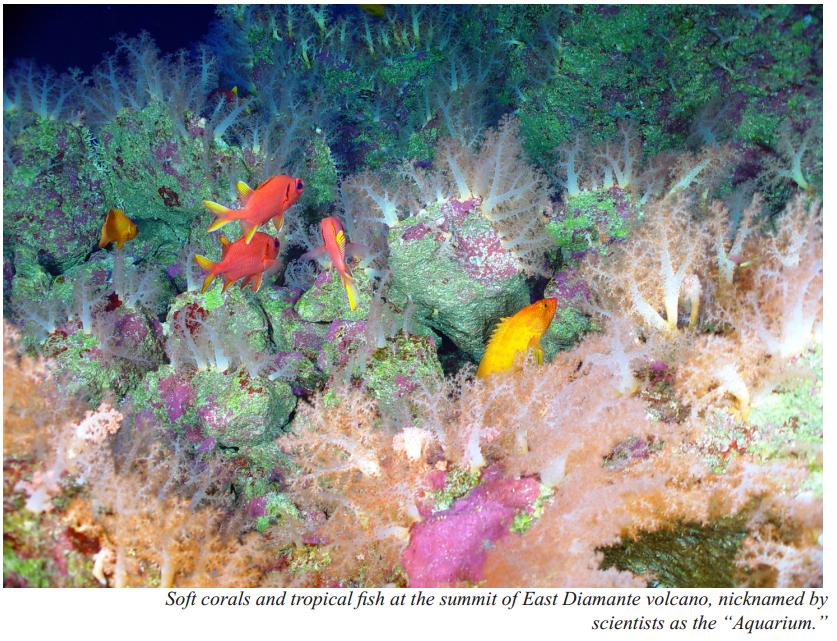
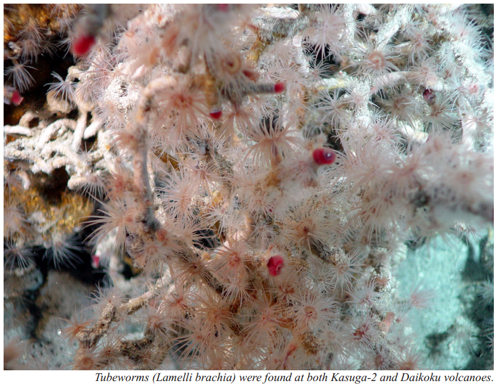

The Mariana Trench
The Marina Trench is the deepest place on Earth, deeper than the height of Mount Everest above sea level. It is five times longer than the Grand Canyon and includes some 50,532,102 acres that are virtually unknown to humans.

The Volcanic Unit
an arc of undersea mud volcanoes and thermal vents – supports unusual life forms in some of the harshest conditions imaginable. Here species survive in the midst of hydrothermal vents that produce highly acidic and boiling water.

The Champagne vent,
found at the NW Eifuku volcano, produces almost pure liquid carbon dioxide, one of only two known sites in the world. A pool of liquid sulfur at the Daikoku submarine volcano is unique in all the world. The only other known location of molten sulfur is on Io, a moon of the planet of Jupiter.

In the Islands Unit, unique reef habitats support marine biological communities dependent on basalt
rock foundations, unlike those throughout the remainder of the Pacific. These reefs and waters are
among the most biologically diverse in the Western Pacific and include the greatest
diversity of seamount and hydrothermal vent life yet discovered. They also contain one of the most
diverse collections of stony corals in the Western Pacific, including more than 300 species, higher
than any other U.S. reef area.

The submerged caldera at Maug is one of only a few known places in the world where photosynthetic
and chemosynthetic communities of life co-exist. The caldera is some 1.5 miles wide and 820 feet
deep,
an unusual depth for lagoons. The lava dome in the center of the crater rises to within 65 feet of
the surface. Hydrothermal vents at about 475 feet in depth along the northeast side of the dome spew
acidic water at scalding temperatures near the coral reef that quickly ascends to the sea surface.
Thus, coral reefs and microbial mats are spared much of the impact of these plumes and are growing
nearby, complete with thriving tropical fish. As ocean acidification increases across the Earth,
this caldera offers scientists an opportunity to look into the future and ensure continuation of
coral reef communities.
The coral reef ecosystems within the Islands Unit have high numbers of apex predators, larger than anywhere else along the Mariana Archipelago. One site has the highest density of sharks anywhere in the Pacific, even higher than those of the remote islands of the Central Pacific.

Similarly, these northern islands have the highest large fish biomass in the Mariana Islands.
The
rare bumphead parrotfish – the largest parrotfish species – thrives in these waters. The species has
been depleted throughout much of its range and is included on the IUCN Red List of Threatened
Species.